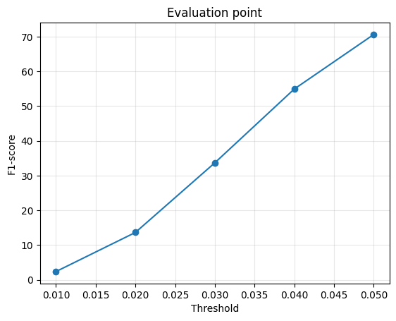

Hongyi (Sam) Dong
Due to limited computational resources, only the voxel model was trained beyond 10,000 iterations (98,000 iterations total), while all other learned models were trained for at most 10,000 iterations.
For voxels, I use binary cross entropy with logits. Each voxel is treated as a binary occupancy prediction:
L_voxel = BCEWithLogits(predicted occupancy, target occupancy)
For point clouds, I use the symmetric Chamfer distance. For every point in one point cloud, the nearest point in the other cloud is found, and the loss is computed in both directions.
L_chamfer =
mean(min distance from prediction to GT) +
mean(min distance from GT to prediction)

The mesh is optimized using a geometric reconstruction loss together with Laplacian smoothness regularization. The smoothness term discourages neighboring mesh vertices from moving independently and helps preserve a coherent surface.

The input RGB image is encoded using an ImageNet-pretrained ResNet-18 encoder.
All models use the RGB input directly (load_feat=False) and were trained
with GPU acceleration. I evaluate three output representations: voxels, point clouds,
and meshes.
The voxel decoder predicts a 32 × 32 × 32 occupancy grid.
The final model is trained for 98,000 iterations.


Qualitatively, the voxel representation captures the overall occupied volume and coarse chair silhouette well. However, the fixed voxel resolution tends to smooth or thicken thin structures such as legs and narrow supports.
The point-cloud decoder directly predicts 1,000 3D points and is trained with symmetric Chamfer distance. The final model is trained for 10,000 iterations.


The predicted points generally occupy the correct object region and provide the strongest quantitative result among the three learned representations. The point clouds are still relatively diffuse and do not explicitly provide a connected surface.
The mesh decoder deforms a fixed ico_sphere(4) template containing
2,562 vertices. Vertex offsets are learned using a reconstruction loss together with
mesh smoothness regularization. The final model is trained for 10,000 iterations.


The mesh representation produces a continuous surface, but the fixed template topology makes large deformations difficult. In the examples, the model often captures the approximate spatial extent of the chair while producing folded or distorted surface regions.
| Representation | Training Iterations | F1 @ 0.01 | F1 @ 0.02 | F1 @ 0.03 | F1 @ 0.04 | F1 @ 0.05 | Precision @ 0.05 | Recall @ 0.05 |
|---|---|---|---|---|---|---|---|---|
| Voxel | 98,000 | 4.591 | 23.919 | 46.692 | 64.119 | 75.732 | 72.550 | 80.156 |
| Point | 10,000 | 3.762 | 22.008 | 48.534 | 68.518 | 80.044 | 81.030 | 80.995 |
| Mesh | 10,000 | 4.747 | 24.267 | 46.118 | 62.024 | 72.671 | 70.199 | 76.025 |
At the 0.05 threshold, the point representation obtains the highest F1 (80.044), followed by voxels (75.732) and mesh (72.671).
Intuitively, point clouds are easier to optimize for this task because they directly
place samples on the object surface without requiring a fixed topology or a dense
volumetric grid. Voxels are limited by their 32 × 32 × 32 resolution,
while the mesh decoder must deform a fixed-topology template, which makes large
geometric changes more difficult. These representation constraints help explain the
differences in reconstruction quality.
I varied the number of output points from 1,000 to 500. Both models are trained for 10,000 iterations using the same learning rate, batch size, architecture, and training data.

| n_points | Training Iterations | F1 @ 0.01 | F1 @ 0.02 | F1 @ 0.03 | F1 @ 0.04 | F1 @ 0.05 | P @ 0.05 | R @ 0.05 |
|---|---|---|---|---|---|---|---|---|
| 1000 | 10,000 | 3.762 | 22.008 | 48.534 | 68.518 | 80.044 | 81.030 | 80.995 |
| 500 | 10,000 | 2.516 | 15.595 | 37.903 | 59.153 | 73.635 | 74.726 | 74.054 |
Using 1,000 points improves F1@0.05 by 6.41 points compared with using 500 points, and the 1,000-point model performs better at every threshold. A denser point set provides more samples for representing the object surface.
n_points when sampling points from
the ground-truth surface. The 500-point model is therefore evaluated using 500
predicted and 500 ground-truth points, while the 1,000-point model uses 1,000 of
each. Some of the measured difference may therefore result from evaluation sampling
density.
To test sensitivity to different image regions, I occluded the top, bottom, left, or right half of each input image. The masked region is replaced with the ImageNet mean color, which becomes zero after normalization.

| Mask | Mean IoU vs. Original Prediction | Mean |Δ Occupied Voxels| | Mean F1 @ 0.05 |
|---|---|---|---|
| Original | 1.0000 | 0 | 72.51 |
| Top | 0.1615 | 1604.0 | 49.13 |
| Bottom | 0.1118 | 1781.0 | 51.04 |
| Left | 0.3414 | 766.3 | 70.46 |
| Right | 0.1051 | 1894.3 | 57.54 |
The predictions change substantially under every half-image mask. For these three examples, masking the right half produces the largest average change, followed by the bottom, top, and left halves. All four masks reduce the average occupied volume.
The effect is not directly correlated with reconstruction quality. Some masked predictions obtain a higher F1 than the original prediction even though their geometry changes substantially. The experiment therefore measures sensitivity to the intervention rather than identifying a universally important semantic region.
For the implicit representation, the network predicts occupancy as a function of
the input image features and a queried 3D coordinate. At inference time, the
function is evaluated over a regular 32 × 32 × 32 grid in normalized
3D coordinates to obtain the predicted occupied region. The final model is trained
for 10,000 iterations.


| Threshold | 0.01 | 0.02 | 0.03 | 0.04 | 0.05 |
|---|---|---|---|---|---|
| F1 | 3.133 | 15.643 | 30.565 | 42.730 | 51.605 |
At threshold 0.05, the implicit model obtains precision 60.972, recall 48.349, and F1 51.605. 85 of the 678 test predictions contain no extracted surface and therefore receive zero score.
Successful examples produce smooth, coherent volumes and capture the rough chair silhouette. However, thin structures are difficult to recover, and some objects result in incomplete or empty occupancy predictions.
In the parametric approach, the image-conditioned network maps sampled 2D parameters
(u, v) to 3D points (x, y, z). The resulting surface
samples are trained against the target geometry using Chamfer distance. The final
model is trained for 10,000 iterations.


| Threshold | 0.01 | 0.02 | 0.03 | 0.04 | 0.05 |
|---|---|---|---|---|---|
| F1 | 4.238 | 22.574 | 45.046 | 62.762 | 74.768 |
At threshold 0.05, the parametric model obtains precision 76.299, recall 74.723, and F1 74.768. It performs substantially better than the implicit occupancy model in this experiment.
The predicted samples generally recover the broad object extent, although the reconstructed point sets remain diffuse and do not explicitly enforce a clean connected surface.
I trained the voxel reconstruction model on the extended dataset containing chairs, cars, and airplanes. The final three-class model is trained for 10,000 iterations and evaluated on 1,451 test objects.


| Class | # Test | # Empty | F1 @ 0.01 | F1 @ 0.02 | F1 @ 0.03 | F1 @ 0.04 | F1 @ 0.05 | P @ 0.05 | R @ 0.05 |
|---|---|---|---|---|---|---|---|---|---|
| Overall | 1451 | 104 | 5.622 | 22.716 | 38.929 | 49.570 | 56.284 | 71.251 | 50.944 |
| Chair | 678 | 58 | 3.245 | 15.201 | 28.586 | 39.345 | 47.461 | 64.073 | 42.479 |
| Car | 368 | 39 | 2.472 | 12.129 | 22.984 | 31.363 | 37.730 | 57.439 | 30.840 |
| Plane | 405 | 7 | 12.466 | 44.915 | 70.731 | 83.231 | 87.913 | 95.816 | 83.380 |
The model performs very differently across the three categories. Airplanes obtain the strongest F1@0.05 at 87.913, while chairs obtain 47.461 and cars obtain 37.730. The mean of the three per-class F1@0.05 scores is 57.701.
I compare the chair predictions of the chair-only voxel model with the chair subset of the three-class model. Both models are evaluated on the same 678 chair test objects using the same input views, ground-truth samples, and metric implementation.


| Threshold | Chair-only F1 | Three-class F1 | Three-class − Chair-only |
|---|---|---|---|
| 0.01 | 4.694 | 3.245 | -1.449 |
| 0.02 | 24.422 | 15.201 | -9.221 |
| 0.03 | 47.432 | 28.587 | -18.846 |
| 0.04 | 64.883 | 39.345 | -25.539 |
| 0.05 | 76.521 | 47.462 | -29.059 |
At threshold 0.05, the chair-only model obtains F1 76.521, compared with 47.462 for the three-class model. Over the paired 678 chair samples, the three-class model performs better on 129 objects and worse on 549.
The average voxel IoU against ground truth is 0.3076 for the chair-only model and 0.2031 for the three-class model. The three-class model also produces 58 empty chair predictions compared with none for the chair-only model.
The three-class model predicts less occupied volume on average: 778.0 voxels per object compared with 1256.4 for the chair-only model and 1397.6 for the ground truth. This suggests that the three-class model tends to under-fill the chair geometry.
Qualitatively, the chair-only model generally produces fuller and more complete chair geometry, while the three-class model more often produces incomplete or under-filled shapes. This agrees with the larger number of empty predictions and lower occupied volume observed for the three-class model.
The chair-only F1@0.05 in this paired comparison (76.521) is slightly different from the Q2 voxel result (75.732) because the two evaluation runs use different per-sample view and point-sampling seeds.